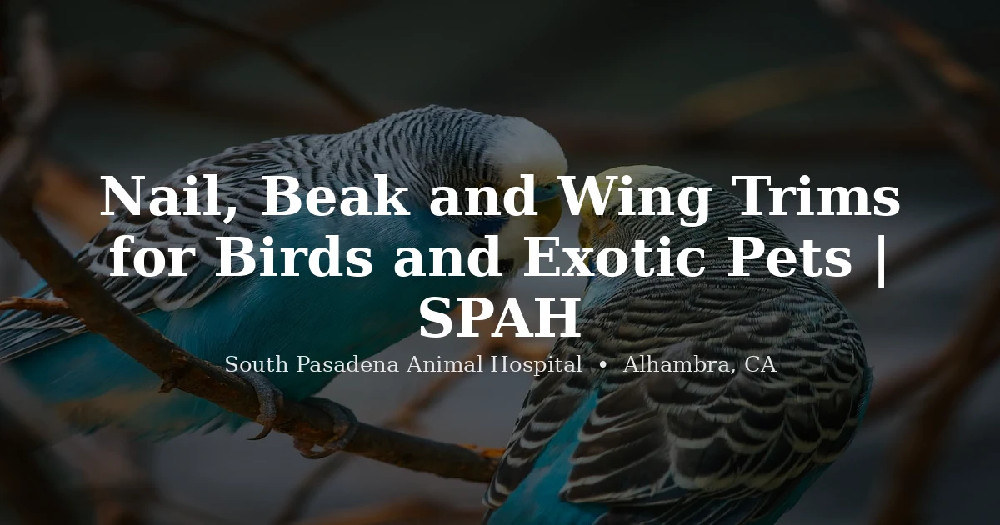

Nail, Beak and Wing Trims: What Birds and Exotic Pets Actually Need

People call us about bird grooming, and we usually know what they mean before they finish the sentence. The nails are catching on everything. The beak looks long. The wings need sorting out. We do all of it. We just do not file it under grooming, because for a bird none of this is a spa afternoon. A frightened cockatiel can hurt itself in the few seconds it takes to pick it up wrong. And a long beak is sometimes the first hint of a problem that has nothing to do with the beak. So these trims happen on the medical side, with a vet in the room. Here is what birds and the small exotics actually need, and how to know when it is time to come in.
Why we do this on the hospital side
Birds hide how sick they are until the day they can't. They are also more fragile in your hands than most people expect. Restrain one badly, or restrain one that is quietly unwell, and a thirty-second nail trim turns into a real problem. That is why this stays with the veterinary team and not a grooming bench. Whoever is holding your bird is watching its breathing, feeling the keel bone for weight loss, and reading its stress the whole time the clippers are out. For a budgie that weighs 35 grams, none of that attention is spare.
It also means we catch things. We have had birds booked for nothing more than a nail trim where the droppings had changed, or a toe was hot and swollen, or the beak was quietly telling us the liver was in trouble. The trim is never only a trim. There is more on how we handle avian care in Alhambra if you want it.
Nails: the perch matters more than the clipper
Overgrown nails are the number one reason birds land on our table. The fix usually starts with the perch, not the clipper. A bird that spends its whole life on identical smooth dowels never wears its nails down evenly. Give it perches of different widths, add a natural branch or two, and a lot of birds keep their own nails reasonable between visits.
Lose the sandpaper perch covers. People buy them hoping to file the nails down. What they actually do is sand the bottom of the foot raw and start a pressure sore. We see the fallout often enough that we bring it up before anyone asks.
How often? Ignore the calendar and read the grip. Nails that dig into your hand on step-up, snag your sleeve, or hang up in the cage bars are too long. For a lot of pet birds that works out to every one to three months. A macaw and a finch are not on the same clock, though, and neither are two budgies in two different cages.
Beaks: a healthy bird shapes its own
Now the part that surprises people. A healthy bird almost never needs its beak trimmed. The beak is living tissue. It wears and renews on its own through eating, chewing, and wiping clean on a perch, and a bird with decent food and something to gnaw keeps it in shape without us. So a beak that overgrows is a question, not a filing job. Why did it grow?
The usual answers are not cosmetic. Liver disease. A lifetime of nothing but seed. Scaly face mites in a budgie. A jaw that no longer meets the way it should. File the beak flat without asking why, and you have treated the symptom and walked straight past the cause. That is the reason beak work stays with a vet and never happens at the kitchen table. If your bird's beak looks longer than it did, or one half is sliding past the other, come in rather than wait it out.
Wings: the clip is a conversation, not a default
Wing trims are the one people assume is automatic. We treat it as a decision. A good trim takes the top off a bird's flight so it can't rocket up and out an open door, while still letting it coast down to the floor under control. Cut too short, or cut clumsy, and the bird comes down like a dropped phone. Hard landings crack keels and split blood feathers.
Whether to clip at all comes down to the bird and your house. A fully flighted parrot in a loud home with open doors and a ceiling fan is a different risk than a calm bird in a quiet room. We would rather talk yours through and show you a safe trim than give every bird the same haircut. Nick a blood feather during a clip and it bleeds more than you would believe. One more reason this is a job for trained hands.
Rabbits and guinea pigs have the same problem
It is not only birds. Rabbit and guinea pig nails grow without stopping, and a life on carpet and fleece never files them down the way digging and foraging would. Leave them and they curl, catch on things, and eventually change how the animal sits. A nail torn off on a cage grid is a painful, bloody mess, and an avoidable one.
Most rabbits and guinea pigs do fine with a trim every one to two months. We are happy to do them, and with the small mammals we will usually show you what is safe to keep up at home. The rest of what we cover lives on our exotic pet care page, and rabbit owners can read more about rabbit care in Alhambra.
What you can do at home, and what you shouldn't
Nails are the one job some owners take on themselves. If you are steady and your bird or rabbit puts up with handling, you can keep nails in check at home. Keep styptic powder on the counter for the day you catch the quick, because sooner or later you will. There is a blood supply inside the nail, so a nick bleeds and stings, and that is the whole risk in one sentence. If reading that made your stomach turn, you have your answer. We will do it.
Beaks and wings are a different story. Please do not file a beak or clip wings at home. Both bleed easily when they go wrong. Both can hide or worsen something underneath. And both depend on reading the bird correctly while your hands are full. Home care for an exotic pet is good perches, good food, things to chew, and paying attention to change. Leave the trimming to us.
When a trim is really a warning sign
Sometimes the trim you booked is the problem. A beak that keeps overgrowing. A nail bed that looks puffy. A bird suddenly gripping oddly or holding up one foot. Crusty buildup at the corners of a budgie's beak. None of that is cosmetic. Call and describe it instead of waiting for the next routine visit, because with birds the stretch between "looks a little off" and "clearly sick" is short. They burn a lot of energy hiding the first one.
If your bird, rabbit, or guinea pig is due, or you just aren't sure whether what you're seeing is normal, call us at (626) 441-1314 and tell us what's going on. We will tell you straight whether it is a quick trim or something worth a proper look.